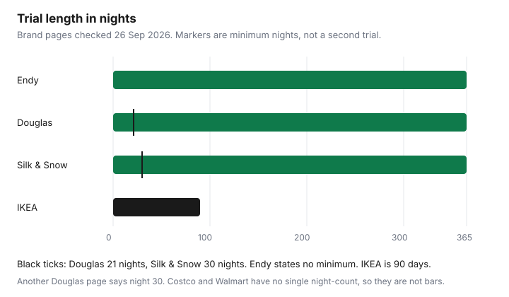

Household Items and Supplies · Canada
How to Buy a Mattress in Canada Without Overpaying: Bed-in-a-Box Trials vs Showroom Haggling
A mattress bill has three clocks: the showroom tag, the night you are allowed to send it back, and the day the old mattress has to leave. The tag is easy to see. The other two are in the policy, and they are not the same at Endy, Douglas, Silk & Snow, IKEA, Costco, and Walmart. Read the clock before you compare comfort.
Where the bed sits in a small apartment is the space guide. Getting the old frame out before movers arrive is the declutter guide. Paying a truck versus doing the stairs yourself is the movers guide. This page is the purchase: showroom price, trial rules, warranty sag, and disposal.
Key takeaways
- Treat a showroom “sale” as the price to compare, unless the tag has an end date you can check. That is a heuristic, not a court finding.
- Endy, Douglas, and Silk & Snow advertised 365-night trials on 26 Sep 2026. Douglas asks for 21 nights first. Silk & Snow asks for 30. Endy’s trial page states no minimum.
- IKEA’s mattress policy is 90 days, once, to an IKEA refund card. It does not cover bases, slats, or toppers.
- Sag coverage is an inch measurement, and stains and a weak base void it. Endy’s threshold is greater than 1 inch. Silk & Snow’s hybrid is greater than 2 inches.
- Toronto’s 2026 oversized fee is $23.23 a year per home. A depot mattress drop-off from 1 July 2026 is $142.40 a tonne, at two stations only.
Showroom pricing: why 'sale' is permanent and how to negotiate
Walk in with the model name and the size written down. Ask for the price you would pay today if you took it, including delivery and removal of the old set. If the tag says 50 percent off and the consultant cannot show you a recent week when that size sold at the higher price, use the tagged price as the real price. Compare it with the same size from a second seller. The “sale is permanent” line is a buying heuristic: a percent-off tag is the price to beat, unless it names an end date and you have seen the higher price charged outside that window. It is not a claim that every Canadian advertisement is misleading.
Negotiation is the written out-the-door number. A showroom can change a quote. A product page changes when the page changes. Ask what happens if you return it, who picks it up, and whether the refund goes to your card or to store credit. The Brick’s removal page, checked 26 Sep 2026, prices mattress removal at $15.75 per piece in major markets, so a queen mattress and box spring is the page’s own example of $31.50. Each piece has to be bagged and sealed. Online orders can have the delivery team bring the bags. That fee belongs on the quote, not in a later phone call.
If the showroom will not put delivery, removal, and the return window on one page, you are comparing a feeling with a contract. Leave with the paper. A floor model that has been slept on in the store is not the same trial as a bed-in-a-box that starts when it arrives at your door.
Bed-in-a-box in Canada: trial lengths, minimum nights, and return pickup rules
Endy’s 365-night page, checked 26 Sep 2026, says the 365-night terms apply to mattresses bought on or after 15 November 2025. Earlier purchases stay on a 100-night trial. Original Endy Hybrid mattresses marked final sale and bought after 9 September 2026 at 11:59 p.m. Eastern are not eligible. Each customer gets one 365-night trial on the first Endy.com mattress order, one exchange, and a maximum of four mattresses on that order. Pickup is arranged after you request the return. Urban partners usually call in two to five business days. Rural pickup can take up to three weeks to arrange, and you have to accommodate the pickup within three weeks of that contact or the request is voided. The refund goes to the original card, typically within five business days of a confirmed pickup, then your bank’s posting time. There is no fee for the product itself on an eligible return. The page does not state a minimum number of nights before you may ask. A size exchange counts as the end of the trial.
Douglas’s sleep-trial page says the trial starts the day the mattress arrives, asks you to take at least 21 nights, and gives you until night 365 for a mattress or night 120 for select accessories. Pickup and the refund are described as free once the mattress is collected, with donation when a charity can take it. The same page has a separate line, “180 nights with the purchase of a mattress protector.” A different Douglas article says you decide between nights 30 and 365. Those pages do not say the same thing. On the day you order, read the trial that is attached to that mattress, and if both a 21-night and a 30-night wait appear, follow the longer wait so a day-22 return is not refused.
Silk & Snow’s return article and terms, checked 26 Sep 2026, give mattresses 365 nights from delivery and ask for 30 nights before a return. Mattresses bought before 14 May 2024 were on a 100-night trial. Pickup is free. You provide three business days inside the two weeks after you start the return. On pickup day the mattress has to be on the ground floor, near the entrance. It has to be in donatable condition: no stains, tears, or odours. The refund follows a confirmed pickup, to the original payment method. Toppers on the help article are a 100-night trial, not 365.

Warranty fine print: sagging depth, stains, and proper-support clauses
A trial is “I do not like it.” A warranty is “it failed the measurement.” Endy’s warranty article covers, during normal use, degradation that leaves a visible indentation greater than one inch and is not from an improper foundation, plus foam that splits or cracks. The default term on that article is 10 years. Registering as described there extends it to 15, with one replacement or repair and no deductible named. The warranty page says the mattress must not sit on the floor and needs a raised frame with supports along the whole bottom and no gaps larger than 3 inches. Stains, burns, tears, and liquid damage are excluded. Softness that increases with age is excluded. Comfort preference is excluded.
Silk & Snow’s warranty page gives 15 years from delivery. Repair or replacement is at no additional cost for the first 10 years, then at a cost of 75 percent of the original purchase price from year 11 through year 15. The foam mattress is covered for a permanent indentation greater than 1 inch. The hybrid and the organic models use greater than 2 inches. Body indentation under that threshold is listed as not covered. The mattress has to be opened within 30 days of receipt. Slats need to be at least 2 inches wide and no more than 3 inches apart, or 1.5 inches wide and no more than 2 inches apart, with a centre support on queen and larger sizes. Stains and a wet basement floor are excluded. The trial and the warranty are voided if the mattress leaves the country where you bought it.
Douglas’s built-to-last page says that if sagging beyond 2 inches occurs on an approved base, the 15-year warranty covers it. Another Douglas page says every Douglas Original has a 20-year warranty. Use the warranty shipped with the mattress. A flexible base is described on the product page as something that can cause sagging. IKEA’s exchange page says that once you have found the mattress, a 10-year mattress warranty applies. That page does not print a sag depth. Costco and Walmart sell other brands. Their return windows are not a sag measurement. Photograph the dip with a straightedge, on a bare mattress, before you file anything.
Costco, IKEA, and Walmart as budget options
These are ways to spend less, not a ranking. IKEA Canada’s return policy, checked 26 Sep 2026, takes an unopened product back within 365 days for a refund to the original payment method. A mattress is under the separate “Love it or exchange it” policy: one exchange or return within 90 days, with proof of purchase, refunded to an IKEA refund card, if it is not dirty, marked, or damaged. Bases, slats, and toppers are excluded. The page suggests waiting at least a month because a new mattress can feel firm. That sentence is advice. The binding line is once, inside 90 days. An upgrade means you pay the difference. Delivery and pickup fees apply. You can bring it to the store covered. You do not have to recompress it.
Costco’s return FAQ, version 4.0, published 10 October 2025, guarantees satisfaction on merchandise with listed exceptions. Mattresses are not in the electronics list that is limited to 90 days. Major appliances are. A mattress is therefore on the general policy, reviewed case by case, and a big-ticket return needs a call to the warehouse before you arrive because of the truck. There is no 365-night promise on that FAQ. If a Kirkland or other mattress in the warehouse has its own card, read the card. Membership rules still apply.
Walmart.ca does not publish one mattress trial for every listing. The marketplace return policy says many sellers offer at least 30 days, and it lists full-size mattresses among oversized items that may not be returnable in a store. A Sleep Country brand page on Walmart.ca said returns within 7 days of delivery, with exceptions. A single third-party listing can advertise its own night count. The listing in the cart is the policy. Budget is reasonable when that policy, the delivery fee on the same page, and a place for the old mattress are all acceptable. It is a poor trade when the return window is shorter than the time your back needs to decide.
Disposal and recycling fees for the old mattress
The City of Toronto’s oversized-items page includes mattresses and box springs in curbside collection on your garbage day. The 2026 garbage-bin fee page charges $23.23 a year per home and per multi-residential unit for oversized and metal items, whether or not you set one out. Bed-bug cases should be wrapped in plastic. The city also says you can slash a mattress so it is not reused. Depot drop-off is separate. From 1 July 2026 the depot fee for mattresses is $142.40 a tonne, which the page illustrates as $1 per 7.02 kg. The worked example on that page is 105 kg for $14.96. Mattresses are accepted only at Commissioners (400 Commissioners Street) and Dufferin (35 Vanley Crescent). A condo has to use the building’s oversized area, which may not be the city curb.
Retailer removal is the other path. The Brick’s $15.75 per piece is above. Leon’s delivery page says bedding must be sealed in a mattress bag the store provides, and that disposal is an additional fee. It also says Leon’s is not responsible for old furniture, and the one-for-one note is marked not available in B.C. If you are buying the new mattress from a bed-in-a-box brand, their pickup is for their mattress during the trial, not automatically for the 12-year-old set in the hallway. Price the old set on its own.
Decision table by budget and sleeper type
No row below names a best mattress. The job is to match the trial you will actually use to the way you sleep, and to keep the showroom heuristic in the first column.
| Seller | Trial | Minimum before return | Pickup and refund | Sag threshold |
|---|---|---|---|---|
| Endy.com | 365 nights if bought on or after 15 Nov 2025. Purchases before that: 100 nights. Final-sale Original Hybrid after 9 Sep 2026, 11:59 p.m. ET: excluded. | No minimum stated on the 365-night page. One exchange, and a size exchange ends the trial. | Partner pickup. Urban contact often 2–5 business days. You must accept pickup within 3 weeks of that contact. Refund to the original card after pickup. | Greater than 1 inch, not from an improper foundation. Default 10 years, 15 if registered as the page describes. |
| Douglas | 365 nights for mattresses on the sleep-trial page. 120 for select accessories. A line on that page also says 180 nights with a mattress protector. | At least 21 nights on the sleep-trial page. Another Douglas page says between night 30 and night 365. Use the rule on your order. | Free pickup arranged by Douglas. Full refund once collected, on that page’s wording. | Beyond 2 inches on the built-to-last page, which also says 15 years. A different page says 20 years. |
| Silk & Snow | 365 nights from delivery. Purchases before 14 May 2024: 100 nights. Toppers: 100 nights on the help article. | 30 nights. | Free pickup. Three business days within two weeks of the request. Ground floor, near the door. Donatable condition. Refund after pickup. | Foam mattress: greater than 1 inch. Hybrid and organic: greater than 2 inches. Years 11–15: you pay 75 percent of the original price. |
| Costco | No mattress night-count on the return FAQ. General satisfaction policy. Manager discretion. | Not stated as a night minimum. | Call the warehouse before a big-ticket return. Online orders can go back to a warehouse with the order number. | The brand card in the box. Not a Costco-wide inch measurement on the FAQ. |
| IKEA Canada | 90 days, one exchange or return, for a mattress. Unopened non-mattress goods: 365 days on the general policy. | The page advises at least a month. The rule is once, inside 90 days. | Bring it to the store, covered. Refund to an IKEA refund card. Delivery and pickup fees apply on an exchange. | 10-year mattress warranty is named. Sag depth is not on the exchange page. |
| Walmart.ca | No single trial. Marketplace policy: many sellers offer at least 30 days. Full-size mattresses are named as oversized. A Sleep Country page on Walmart.ca said 7 days, with exceptions. | Whatever that listing prints. | Oversized marketplace items may have to go back to the seller, not to a store. Read the listing. | The brand on the listing. Not a Walmart-wide inch rule. |
| Situation | What to test | What to ignore |
|---|---|---|
| Tight budget, you can wait a month | A seller whose return window is at least 90 days, with pickup or a store you can reach. IKEA’s 90 days or a 365-night box both qualify on the clock. Add Toronto or retailer disposal before you call it cheap. | A 7-day listing window if your back needs longer. A showroom percent-off tag with no end date. |
| You sleep hot, or you need a season | A 365-night trial, so winter and summer are both in the window. Douglas’s page makes that the point of 365 nights. Confirm the minimum nights so you do not file on night 10. | A comfort claim in July that you cannot send back in January. |
| Side sleeper, or a sore shoulder | The trial, on your pillow and your base. Endy and Silk & Snow both void sag claims from a poor foundation. Fix the slats before you blame the foam. | A warranty that starts at 2 inches if a shallower dip is what keeps you awake. That dip may be uncomfortable and still uncovered. |
| Two adults who disagree | One exchange, used once. Endy allows one exchange and then treats a size swap as the end of the trial. IKEA allows one exchange or return in 90 days. Decide together before the exchange is spent. | Buying two full-price mattresses “to see,” if the second order is outside the one-trial rule. Endy ties later orders on the same address to the same customer. |
| You need it this weekend | In-stock showroom or warehouse stock, with the return path written down. Costco’s general policy is broad and still needs a truck arranged for a return. | A 365-night promise from a marketplace seller whose listing says 7 days. |
Sources & date stamps
- Endy 365-night trial page and warranty articles, checked 26 Sep 2026. Trial change dated 15 Nov 2025. Final-sale hybrid cutoff 9 Sep 2026, 11:59 p.m. ET. Sag: greater than 1 inch.
- Douglas sleep-trial page, built-to-last page, and the “how long do mattresses last” page, checked 26 Sep 2026. 21 nights and 365 on the trial page. Conflicting 30-night line and 15-year versus 20-year wording noted in the table.
- Silk & Snow return article, terms, and warranty page, checked 26 Sep 2026. 30-night minimum, 365 nights, ground-floor pickup. Foam greater than 1 inch. Hybrid and organic greater than 2 inches. 75 percent of the original price in years 11–15.
- Costco return FAQ, version 4.0, published 10 Oct 2025, opened 26 Sep 2026.
- IKEA Canada return policy and Love it or exchange it page, checked 26 Sep 2026. 90 days, refund card, 10-year warranty named.
- Walmart.ca marketplace return policy and the Sleep Country brand page, checked 26 Sep 2026.
- City of Toronto oversized items, 2026 bin fees ($23.23), and depot fees ($142.40 a tonne from 1 July 2026). The Brick removal page: $15.75 per piece.
Frequently asked questions
Can you negotiate mattress prices in Canada?
A showroom can rewrite a written quote, and a website total changes when that page changes. Treat a percent-off tag as the price to compare, unless it names an end date and you have seen the higher price charged outside that window. That is a buying heuristic, not a claim that every Canadian mattress ad is false. This guide does not name a percent you should expect off.
How do bed-in-a-box trials work in Canada?
Endy, Douglas, and Silk & Snow each advertised 365 nights on 26 Sep 2026, with different clocks: Douglas asks for at least 21 nights, Silk & Snow requires 30 nights and a ground-floor pickup, and Endy’s trial page states no minimum. IKEA’s mattress policy is 90 days and one exchange or return to an IKEA refund card, if the mattress is not dirty, marked, or damaged. Read the rule attached to the mattress you are ordering, because Douglas has a second page that says night 30.
What does a mattress warranty actually cover?
It covers a measured sag from a defect, on a proper base, and it excludes stains and a weak foundation. Endy covers a visible indentation greater than 1 inch. Silk & Snow uses greater than 1 inch on its foam mattress and greater than 2 inches on the hybrid and organic models. Douglas’s built-to-last page says sagging beyond 2 inches and describes 15 years, while another Douglas page says 20 years, so the warranty on your order is the one that applies.
How do I get rid of an old mattress?
In Toronto, a house can set a mattress out on garbage day. The 2026 oversized fee is $23.23 a year per home or multi-residential unit whether you use the service or not, and a depot drop-off from 1 July 2026 is $142.40 a tonne at Commissioners or Dufferin only. The Brick removes a mattress one-for-one for $15.75 a piece in major markets if it is bagged and sealed. Ask your own city and your retailer before the truck arrives, because both can differ.
Is a Costco or IKEA mattress a reasonable budget option?
Either can be, when the return rule matches how you sleep and you have priced delivery plus the old mattress. IKEA gives 90 days and one exchange, refunded to an IKEA refund card, and names a 10-year mattress warranty on that page. Costco’s return FAQ publishes no mattress night-count. It is the general satisfaction policy, with a call ahead for big-ticket transport, and neither row is a brand ranking.